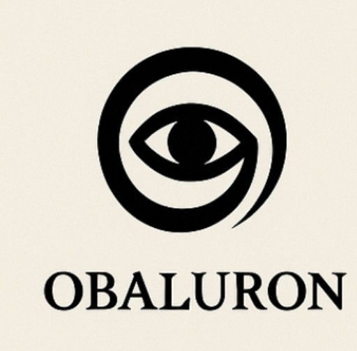
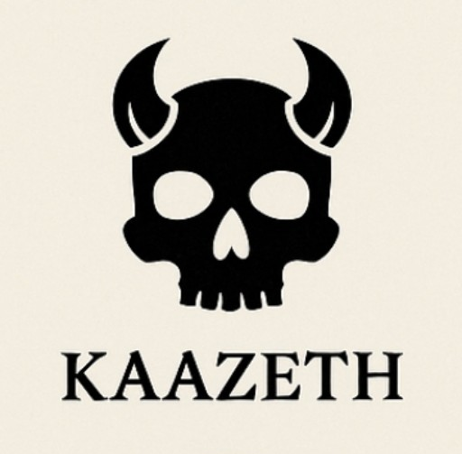
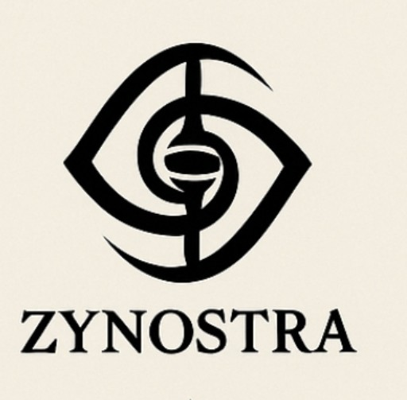
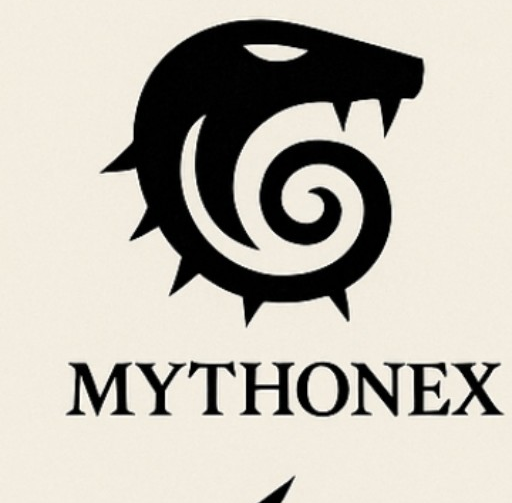
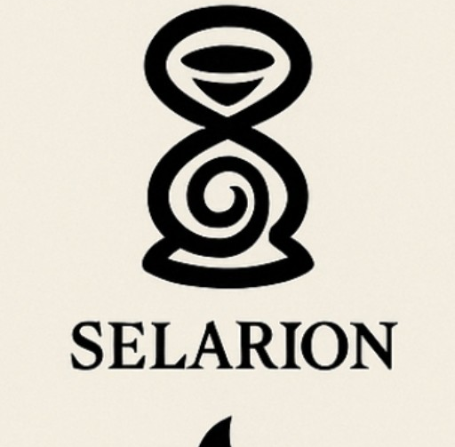
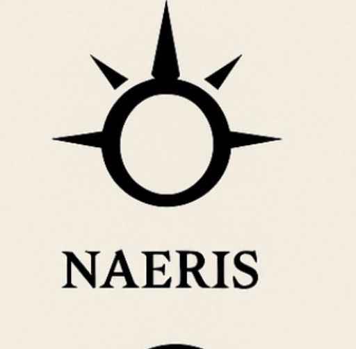
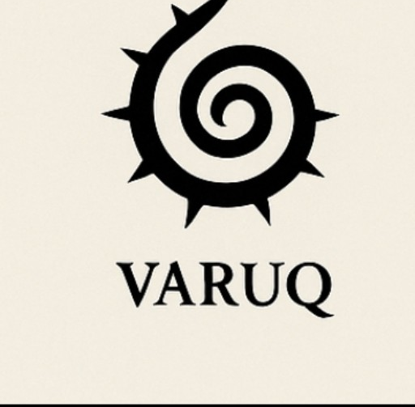
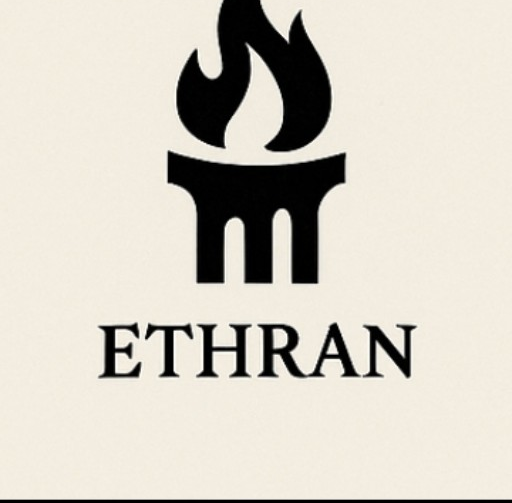
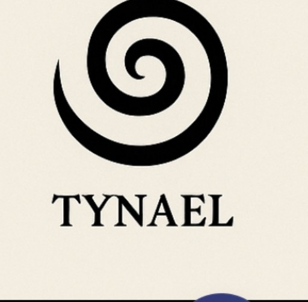

“Before the stars, before the gods, there was only Sound — the Source.”
Entry I – Of Source and Primordial Entry II – Of the Veil and the Forbidden Law Entry III – The First Descent Entry IV – The Descent of the God Eater Entry IV – The Descent of the God Eater Entry V – The Memory War Entry V – The Memory War Entry VI – The Eye of Harmonia Entry VIII – The Silence Before Rebirth Entry X – Echoes of TaricusCreated by Patrick Obinna Uzoechi
Visionary of the Ilunari Scrolls
"Beyond the Spiral’s visible light lies the memory that cannot be spoken. Obaluron saw it. Nova carries it. Now you know..."
        